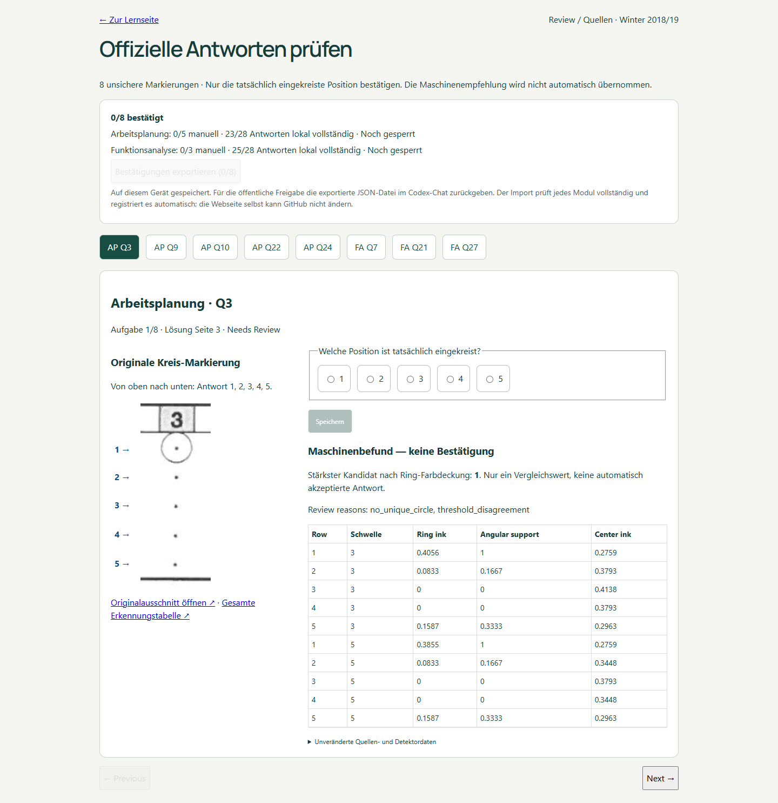
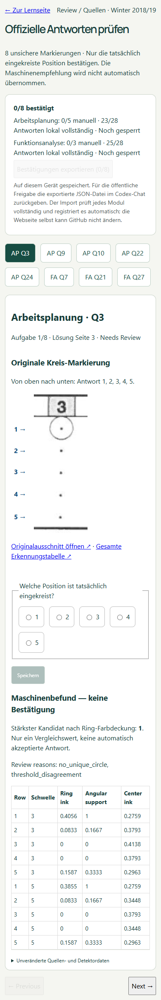

Real confirmations, coverage and production acceptance
Open the eight-question review page
Real confirmations: 8/8 imported. AP28/28 and FA28/28 MC, each8/8 U. Both modules are now released. The material below records the initial UI validation before user confirmation.
These screenshots show the real source review UI with no selected answer. Browser tests used isolated synthetic choices only, never public official data.
Temporary-repository promotion simulation (not real confirmed answers)

